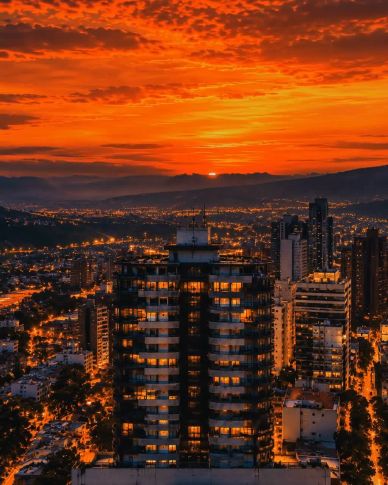
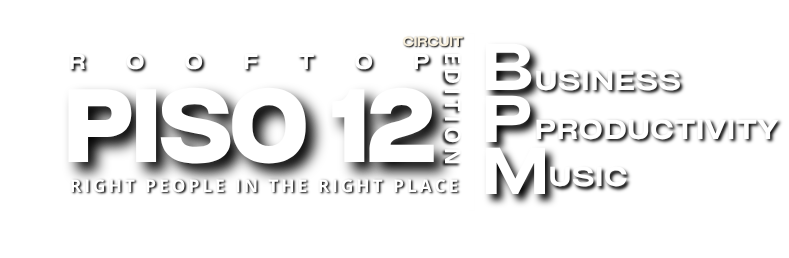

Ideas y proyectos
Conecta lo que estás construyendo con ideas, conocimientos y proyectos de otros sectores.

Gato Verde Music
Gato Verde Music + Ibericloko presentan

Fiesta de negocios.
Relaciones empresariales alrededor
de la música electrónica.
La experiencia
CIRCUIT PISO 12 es una fiesta de negocios y relaciones empresariales. Su idea principal es conectar ideas y proyectos de diferentes sectores alrededor de la música electrónica: empresarios, emprendedores, profesionales y creativos que se encuentran para explorar oportunidades y colaboraciones en un ambiente de fiesta.
Conecta lo que estás construyendo con ideas, conocimientos y proyectos de otros sectores.
Conversa con personas con quienes puedas explorar alianzas, colaboraciones y oportunidades de negocio.
El contexto que nos reúne: una fiesta con DJ sets, conversación y baile, sin reuniones obligatorias.
Segunda edición
05 / 12 / 2026
Pasión del Cielo
Rooftop Piso 12 · Capitalia Building
Manizales, Colombia
Los horarios y las condiciones de acceso se anunciarán aquí. Esta página no abre ventas ni confirma cupos.
Consultar sobre la ediciónMusic By
FRECUENCIA
FABIO OLARTE
Business · Productivity · Music
Nuestra app · Tus matches
Como un “Tinder” de negocios, en una fiesta electrónica.
En CIRCUIT PISO 12, la app que estamos preparando conecta lo que ofreces con lo que otras personas buscan. Los matches son perfiles con intereses complementarios: una oportunidad para iniciar una conversación, explorar una idea o impulsar un proyecto.
La fiesta de negocios es el centro de la experiencia. La música electrónica nos reúne y la app ayuda a que las conexiones continúen después.
“Tinder” se usa solo como comparación para explicar la conexión entre perfiles; CIRCUIT PISO 12 no está afiliado a Tinder.
Cuéntanos qué haces, qué ofreces y qué buscas para tu empresa, negocio, proyecto u oficio.
La propuesta es acercarte a perfiles con intereses complementarios durante la fiesta, para facilitar conversaciones y relaciones empresariales.
El seguimiento previsto incluye un informe personalizado con tus matches y sus contactos autorizados, para retomar las conexiones después del evento.
Solo se comparten los contactos autorizados de tus respectivos matches, con el permiso claro desde el registro: no un directorio de asistentes ni una base de datos para patrocinadores. Un match es una conexión sugerida, no la confirmación de un encuentro o negocio. El registro de diciembre y la entrega de matches se habilitarán cuando el sistema esté listo.
Alianzas de marca
Vincula tu marca a una fiesta de negocios que conecta ideas, proyectos y relaciones empresariales alrededor de la música electrónica.
Logo en piezas gráficas, videos y fotos. Menciones en redes sociales.
Tu logo acompaña la experiencia en la app, los correos promocionales y las comunicaciones e informes personalizados de matches.
Espacio para material publicitario o una activación de marca en el evento.
Ubicación, formatos y calendario se acuerdan con cada marca. Material y producción de la activación a cargo del patrocinador. La presencia en app, correos e informes forma parte de la oferta prevista de CIRCUIT PISO 12, sujeta a la habilitación de esos canales; no incluye acceso a contactos de asistentes.
Antes de venir
Para empresarios, emprendedores, profesionales y creativos de distintos sectores que quieren conectar ideas, proyectos y relaciones empresariales alrededor de la música electrónica. No es un evento exclusivo para DJs.
Son conexiones sugeridas entre perfiles según lo que cada persona ofrece y busca. No significa que hayan conversado ni garantiza compatibilidad comercial o un negocio cerrado. La propuesta incluye facilitar el contacto durante la fiesta y un informe personalizado posterior con los contactos autorizados.
Que conectar ideas, proyectos y relaciones empresariales es el propósito central, y la fiesta alrededor de la música electrónica es la forma de hacerlo. No es una conferencia ni una rueda de reuniones obligatorias: las conversaciones y las oportunidades surgen de manera orgánica.
La apertura del registro, los precios y las condiciones de acceso de diciembre se anunciarán aquí. Consultar información no reserva ni confirma un cupo.
La propuesta para diciembre es compartirlos únicamente con tus respectivos matches, mediante el permiso que se explicará desde el registro. No se publicará un directorio de asistentes ni se entregará una base de contactos a marcas.
CIRCUIT - Piso 12 Edition tuvo su primera edición el 17 de octubre de 2026 en Manizales. La siguiente será el 5 de diciembre.